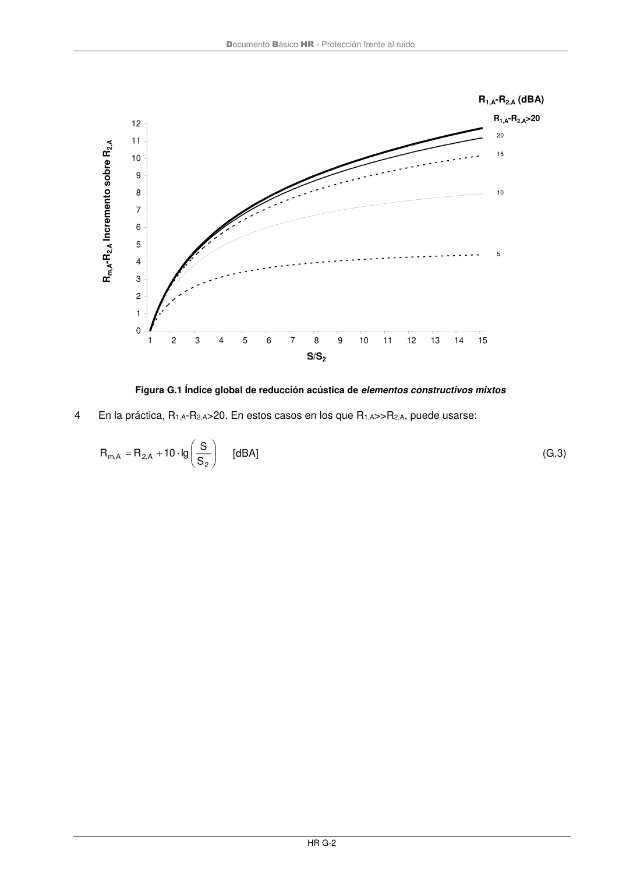

DB-HR · Página 68 · versión 2019-12-20
SHA256: a67baeca5138bb1f121f797d23a79a4557bd9ac4abacd954024893e05411eeab · página física 68 de 80 · métodos de encabezado
solo si están cotejados.
Formatos: Markdown · JSON de bloques · PDF p. 68 · imagen PNG
Documento Básico HR - Protección frente al ruido
HR G-2
0
1
2
3
4
5
6
7
8
9
10
11
12
1
2
3
4
5
6
7
8
9
10
11
12
13
14
15
S/S2
Rm,A-R2,A Incremento sobre R2,A
20
R1,A-R2,A (dBA)
15
10
5
R1,A-R2,A>20
Figura G.1 Índice global de reducción acústica de elementos constructivos mixtos
4
En la práctica, R1,A-R2,A>20. En estos casos en los que R1,A>>R2,A, puede usarse:
+
=
2
A
,
2
A
,
m
S
S
lg
10
R
R
[dBA]
(G.3)
